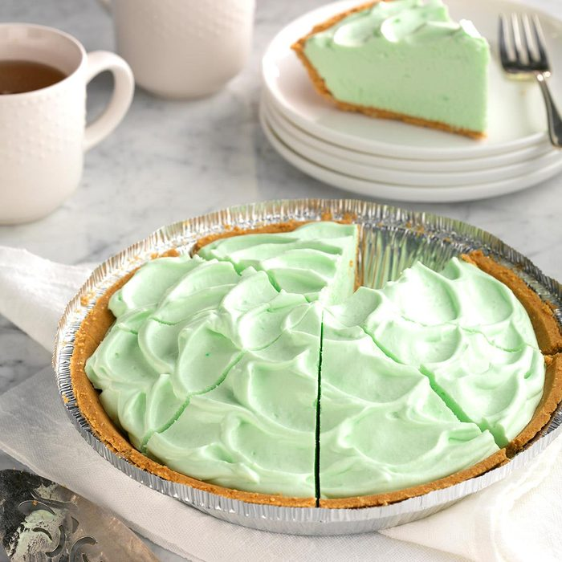

<!DOCTYPE html>
<html lang="en">
<head>
    <meta charset="UTF-8">
    <meta http-equiv="X-UA-Compatible" content="IE=edge">
    <meta name="viewport" content="width=device-width, initial-scale=1.0">
    <title>Document</title>
</head>
<body>
    
</body>
</html>
<!DOCTYPE html>
<html lang="en">
    <head>
        <meta charset="UTF-8">
        <meta http-equiv="X-UA-Compatible" content="IE=edge">
        <meta name="viewport" content="width=device-width, initial-scale=1.0">
        <title>Key Lime Pie</title>
    </head>
    <body>
        <h1>Key Lime Pie</h1>
        
        <p>We hope you enjoyed dinner, whether it was lasagna or a beautiful steak.</p>
        <p>Now, it's time for dessert. You might feel like you're stuffed to the 
            brim, but once you see this pie in person you'll definitely want to make space!
        </p>

        <h4>Ingredients</h4>
        <ul>
            <li>1/4 cup boiling water</li>
            <li>1 package (0.3 ounce) lime gelatin (vanilla is fine too)</li>
            <li>2 cartons (6 ounces each) Key lime yogurt</li>
            <li>1 carton (8 ounces) whipped topping, thawed, or 8 ounces whipped heavy cream</li>
            <li>1 graham cracker crust (9 inches)</li>
            
        </ul>

        <h4>Steps</h4>
        <li>In a large bowl, add boiling water to gelatin; 
            stir 2 minutes to completely dissolve. 
            Whisk in yogurt. Fold in whipped topping. Pour into crust.
        </li>
        <li>Refrigerate, covered, until set, about 2 hours.</li>
    </body>
</html>